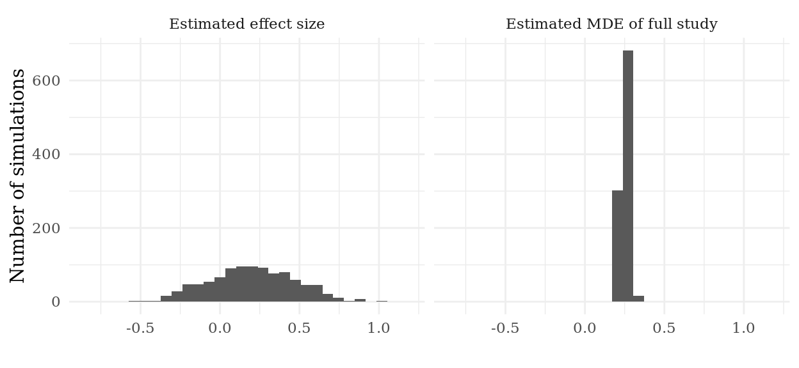

Chapter 26 Piloting
The designs and results of past studies are important guides for selecting M, I, D, and A. Our understanding of the nodes and edges in the causal graph of M, expected effect sizes, the distribution of outcomes, feasible randomization schemes, and many other features are directly selected from past research or chosen based on a literature review of the distribution over past studies. However, researchers face a problem in being guided by past research: the research context and our inquiries often differ in at least subtle ways from any past study. Even when we are replicating a past study, we are collecting data in a different time period and if effects vary over time then aspects of M may differ from the original study. To deal with this, we often run pilot studies. These take many forms: focus groups to learn about features of M or to learn how to ask survey questions; small-scale tests of measurement tools to verify our data collection technology works; up to mini studies with the planned design but on a smaller scale.
Pilot studies are constrained by our time and by money. If we were not constrained, we would run the full study and learn what is wrong with our design and then run a corrected design for the main study. Since we cannot due to our constraints, we run either smaller mini studies or test out only a subset of the elements of our planned design. This places us in a bind: we are running a design smaller or less complete than the study we imagine conducting, and so the properties of the pilot design will not measure up.
MIDA provides a framework for thinking about two aspects of piloting: what can be learned from a pilot? To answer this question, pilot studies should be diagnosed before they are run. Just like for a full study, we can define inquiries about the decisions we would make and the parameter estimates we would draw on in designing the full study.
In Figure XX, we display the results of a diagnosis of a 50-unit pilot study that we are conducting to prepare for a larger main study. We consider two strategies: (1) determining the sample size from a power analysis of the main study, selecting the minimum \(N\) such that the study is 80% powered to detect the pilot study’s effect size); (2) setting a fixed \(N\) determined by our budget constraint, in this case to 500, and using the standard deviation of units in the treated and control group from the pilot to determine the minimum detectable effect size of our 500-unit main study.
In the left panel is the sampling distribution of effect size estimates, i.e., a histogram of the effect estimates from the pilot. In the design, the standard deviation of the outcome is set to one, so effect estimates are in standard deviation units. The true effect size is set to 0.2. We can see that the sampling distribution has a huge range, from nearly -0.5 to nearly 0.75. The first problem with the sampling distribution is that many estimates, in fact nearly a quarter of them, are negative (the wrong sign!). This might lead us not only to choose the wrong sample size but to choose one-sided tests in the wrong direction. The second is that we have a high likelihood of guessing the effect size is much higher than it really is. If we obtain one of the estimates over 0.75 or even over 0.5, we would choose an \(N\) too small to detect the true effect size of 0.2. In short, our estimates of the effect size from our 50-person pilot study are simple too variable to be useful in designing our main study.
However, there is good news: we can learn a lot about the power of our main study from the pilot study, just not from the effect estimates. In the right panel of Figure XX, we estimate the minimum detectable effect size of a 500-unit main study, relying on the estimated standard deviation in the control group and the estimated standard deviation in the treatment group to calculate the estimated standard error of the effect estimate in the main study. We then calculate the minimum detectable effect size using the approximation from (Gelman and Hill 2006, pg. 441), 2.8 times the estimated standard error. We find that our estimates of the MDE for the full study are much more precise, tightly centered around 0.25. Since we don’t know if that is larger or smaller than the true effect size, we then must make an argument based on past studies’ effect sizes to justify whether that minimum size is sufficiently large or whether we should increase the sample size in order to detect even smaller effects. The reason the MDE is more precisely estimated is that the standard deviation of the control group is a much less variable estimate of the true standard deviation of the control potential outcome than the effect size estimate is of the true effect size.

By diagnosing our pilot studies in this way, we can learn what decisions can be made with confidence from pilot data and what should be shaped instead by expectations from past studies and qualitative knowledge. Diagnosis can also help us to decide how large a pilot study we need in order to estimate quantities like the MDE of the full study with precision.
Beyond estimating the MDE of studies, other facts that can often be usefully learned from pilot studies take the form of existence proofs. We often wish to study how variation in \(D\) (a treatment) affects variation in \(Y\) (an outcome), but in the absence of past data from these two variables we may not know even if there is variation in \(Y\) to explain. In experimental studies, we can learn whether a treatment can be implemented, and in an observational study we can learn whether there is variation in the treatment variable.
Baseline measurement may often be used instead of a pilot study to learn about some empirical features.
References
Gelman, Andrew, and Jennifer Hill. 2006. Data Analysis Using Regression and Multilevel/Hierarchical Models. Cambridge: Cambridge University Press.